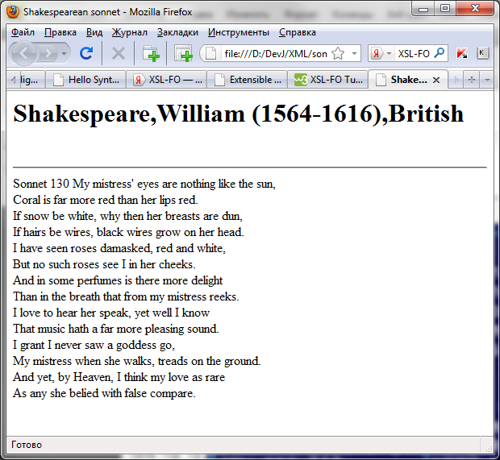

XML XSLT
Цель лабораторной работы: Познакомиться c языком преобразований XSLT.
Задание: Взять в качестве исходного документа XML документ, созданый в лабораторной работе №1. Используя Пример, представленый ниже, лекции и теоретические сведения, написать коммандный файл для получения из XML документа, согласно XSL правил (необходимо также Вам создать), документа HTML, представляющего в виде гипертекста указаную в первоначальном документе информацию.
Замечание. Для работы потребуются инструментальные средства: любой текстовый редактор (подойдет блокнот), парсер XSLT шаблонов Xalan (скачать),
Практический пример.
Пусть имеется созданый XML документ.
<?xml version="1.0"?> <sonnet type="Shakespearean"> <author> <lastName>Shakespeare</lastName> <firstName>William</firstName> <nationality>British</nationality> <yearOfBirth>1564</yearOfBirth> <yearOfDeath>1616</yearOfDeath> </author> <title>Sonnet 130</title> <lines> <line>My mistress' eyes are nothing like the sun,</line> <line>Coral is far more red than her lips red.</line> <line>If snow be white, why then her breasts are dun,</line> <line>If hairs be wires, black wires grow on her head.</line> <line>I have seen roses damasked, red and white,</line> <line>But no such roses see I in her cheeks.</line> <line>And in some perfumes is there more delight</line> <line>Than in the breath that from my mistress reeks.</line> <line>I love to hear her speak, yet well I know</line> <line>That music hath a far more pleasing sound.</line> <line>I grant I never saw a goddess go,</line> <line>My mistress when she walks, treads on the ground.</line> <line>And yet, by Heaven, I think my love as rare</line> <line>As any she belied with false compare.</line> </lines> </sonnet>
Для преобразования в HTML мы создали шаблон
<?xml version="1.0" ?> <xsl:stylesheet xmlns:xsl="http://www.w3.org/1999/XSL/Transform" version="1.0"> <xsl:template match="/sonnet"> <html><head><title>Shakespearean sonnet</title></head> <body> <xsl:apply-templates/> </body> </html> </xsl:template> <xsl:template match="author"> <h1><xsl:value-of select="lastName"/>,<xsl:value-of select="firstName"/> (<xsl:value-of select="yearOfBirth"/>-<xsl:value-of select="yearOfDeath"/>), <xsl:value-of select="nationality"/></h1><br/><hr/> </xsl:template> <xsl:template match="lines"> <xsl:for-each select="line"> <xsl:value-of select="."/><br/> </xsl:for-each> </xsl:template> </xsl:stylesheet>
Пусть исходный XML документ, а также XSL шаблоны находятся в одной текущей директории. Соответсвенно в поддиректории classes находятся класс xalan в директории с таким же названиями.
Тогда комманда для преобразования могут выглядеть следующим образом:
java -cp classes\xalan\xalan.jar org.apache.xalan.xslt.Process -IN sonnet.xml -XSL sonnetrules.xsl -OUT sonnet_tesult_html.htm
Получаем результирующий файл
